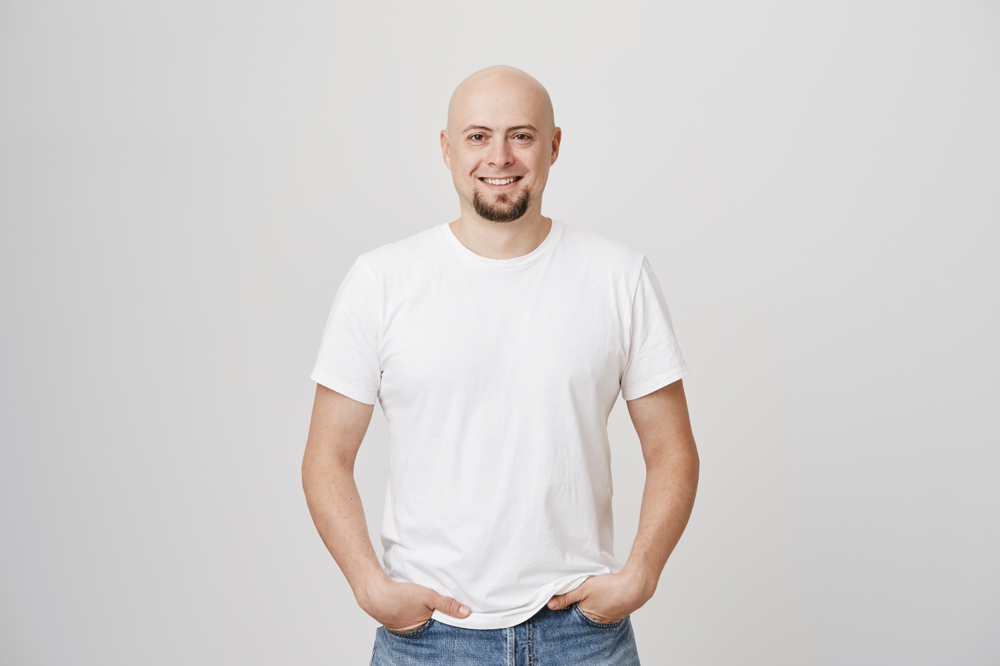

Tõeline jõud ei karju. See kuulab.
Liikumine tegutsevatele meestele
AITAN!
Me ei defineeri end vastandudes, vaid panustades. Meie jõud ei seisne domineerimises, vaid toetamises.

aitan!
üks meist
Me ei defineeri end vastandudes, vaid panustades. Meie jõud ei seisne domineerimises, vaid toetamises.
Tõeline jõud ei karju. See kuulab.
Sa ei pea olema kangelane. Pead ainult ütlema "aitan" — ja seda mõtlema.
Käsi, mis aitab teist, on ka käsi, mis paraneb ise.
Mees ei kasva mugavusest. Ta kasvab valikust olla kohal.
Kui sa ei suuda iseennast aidata, ei suuda sa aidata kedagi.
Vaikiv vendlus on valjuim hüüd, mida üksinda mees võib kuulda.
vaata, kust see kõik algas
Liikumine "Aitan!" sündis vajadusest defineerida, mida mees saab ja tahab olla.
Me ei defineeri end vastandudes, vaid panustades. Meie jõud ei seisne domineerimises, vaid toetamises. Sõna "aitan" on lühike, konkreetne ja suunatud väljapoole. See ei küsi luba ega oota kiitust. See on valik võtta vastutus.
Reedeti kohtuvad nad pubis, hommikuti jooksevad metsas, õhtuti helistavad tuttavale, kelle hääles on midagi paigast ära. Mitte sangarid. Lihtsalt mehed, kes valisid kohaloleku.
Viis suunda, kuhu suuname oma tegutsemist. Mitte loosung — vaid päeva lõpus küsimus, millele vastame iseendale ausalt.
Saan aidata teisi alles siis, kui olen ise terve — füüsiliselt ja vaimselt. Julgen otsida abi, tegelen oma siseilmaga ja ei karda olla haavatav, sest see on tõelise julguse alus.
Mees on kohal — mitte ainult füüsiliselt, vaid emotsionaalselt. Olen toetav partner, eeskujuks olev isa ja ustav poeg. Minu kodus valitseb turvatunne, mitte hirm.
Lõpetame üksinduse ja konkurentsi seal, kus peaks olema vendlus. Kui näen sõpra murdumas, ulatan käe. Räägime asjadest nii, nagu need on — ilma filtrita ja häbitundeta.
Tõeline mehelikkus on kaitsemehhanism neile, kes seda vajavad. Olgu see sekkumine ebaõigluse korral tänaval või abi pakkumine naabrile — me ei kõnni mööda.
Oleme ehitajad, mitte lammutajad. Panustame vabatahtlikuna, hoiame oma kogukonda ja loome väärtust, mis jääb kestma ka pärast meid.
Sa ei pea olema kangelane. Pead ainult ütlema "aitan" — ja seda mõtlema. Anna oma sõna →
Maailm muutub paremaks siis, kui mehed hakkavad tegutsema nende nimel, kes on nende ümber.
Lihtne mehaanika, mida saab rakendada igal hommikul, igal pingelisel hetkel.
Ole tähelepanelik oma ümbruse ja sisehääle suhtes. Kes vajab abi — ka siis, kui ta seda ei küsi? Mida tunnen ma ise just praegu?
"Kas ma saan aidata?" või "Kuidas me selle lahendame?". Lihtne küsimus avab ukse, mille keegi muu ei oska avada.
Vähem muretsemist, rohkem lahendusi. Tegutsemine on mehe loomuses — ja iga väike tegu loeb rohkem kui pikk monolõog.

Tõelised lood meestelt, kes lubasid endale, et täna märkavad, küsivad ja teevad. Mitte üleöö — vaid samm-sammult.
Mu poeg ütles esimest korda elus, et tunneb end mu kõrval ohutult. Ma nutsin autos.
Ma olin see isa, kes oli füüsiliselt kohal, aga emotsionaalselt teises maailmas. Telefon käes, mõtted tööl. "Aitan!" ei õpetanud mulle midagi uut — see meenutas mulle, kes ma tegelikult olla tahan. Esimene asi, mida muutsin: õhtusöögi ajal panen telefoni teise tuppa. Pisike samm. Kuue kuuga muutus terve meie pere keemia.
Ma ei teadnud, et üks küsimus võib päästa elu.
Andres oli mu vanim sõber. Ta naeratas alati. Ühel reede õhtul nägin tema silmis midagi, mida ma varem polnud märganud — ja küsisin otse: "Kuidas sul tegelikult on?" Ta vaikis kuus minutit. Siis ta rääkis. Täna on ta elus. Ja mina olen muutunud meheks, kes küsib.
meestest tunneb end pärast esimest "Aitan!" tegu tugevamana kui enne.
Esimest korda 30 aasta jooksul ütlesin valjusti: ma ei ole okei.
Ma arvasin, et terapeudi juurde minemine on nõrkade jaoks. Manifestis seisis, et tõeline julgus on olla haavatav. Lugesin seda kolm korda. Helistasin järgmisel päeval. Sealt tuli minu uus elu.
Pakkusin trepikoja vanaprouale abi. Selgus, et ta polnud kuu aega kellegagi rääkinud.
Ühe poekoti kandmisest sai iganädalane teisipäeva tee-tund. Mina arvasin, et aitan teda. Tegelikkuses aitas tema mind palju rohkem.
Ma ei vajanud uut naist ega uut tööd. Ma vajasin uut endast.
15 aastat abielu, kaks last, ilus maja — ja sügaval sees tühjus, mida ma ei osanud nimetada. Ma süüdistasin oma naist, ülemust, ilma. "Aitan!" andis mulle ühe lause, mis murdis midagi: "Mees on kohal — mitte ainult füüsiliselt, vaid emotsionaalselt." Ma polnud kohal olnud aastaid. Ma olin näidanud üles ainult siis, kui see oli mugav. Asjad ei muutunud üleöö. Aga ühel hommikul tõusin, vaatasin oma naist ja küsisin: "Kuidas sa tegelikult oled?" Ja siis kuulasin. Päriselt. Esimest korda kümne aasta jooksul.
Mu meeste WhatsApp-i grupp läks koomiksitelt päris vestlustele.
Mina alustasin. Saatsin lause: "Mul oli täna raske päev, palun küsige minult homme, kuidas läks." Vastas neli sõpra. Sealt algas asi, mida ma ei oleks osanud unistadagi.
Mu 8-aastane tütar ütles tüdruksõbrale: "Mu isa AITAB."
See oli kõige uhkem hetk minu elus. Mitte autoga, mitte palgaga, mitte kalapüügiga. Ühe lihtsa tegusõnaga, mille ta minus märkas.
meest on andnud oma sõna. Iga päev liitub umbes 26 uut.

"Mul oli kõik. Aga ma polnud mees. 47 päevaga muutus kõik. Sa saad sama."
linktr.ee/markusvendelin2019. Tippjuht ühes Tallinna IT-ettevõttes. BMW M3. Maja Pirital. Naine, kaks last. 32-aastane. Numbrite mõttes — võitnud.
Aga peeglisse vaadates ma ei näinud meest. Nägin sinna juhuslikult sattunud poissi, kes oli aastaid teisi imiteerinud, ilma et oleks ise teadnud, kes ta on.
Ühel reede õhtul jõudis kõik järele. Paanikahoog autos Liivalaia tänaval. Käed nii värisesid, et ma ei saanud rooli hoida. Helistasin sõbrale, kes mind vana sauna juurde sõidutas. Seal me rääkisime kaheksa tundi. Esimest korda elus ma päriselt rääkisin.
Sealt ühest ööst sündis Aitan!. Kui mina sain päästa, said ka teised. Ja kui kümme meest võtsid mu sõnad omaks, sai sellest sada. Ja siis tuhat. Täna on meid 5 247 üle 19 riigi.
Ma ei luba sulle, et 47 päeva muudavad kõik. Ma luban sulle, et selle aja lõpuks vaatad sa peeglisse — ja näed meest.
Liitudes lubad endale ja teistele, et täna märkad, küsid ja teed. Saad kord nädalas lühikese kirja: üks tegu, üks meelespea, üks lugu.
Saadame ainult seda, mis aitab. Lahkud millal soovid.